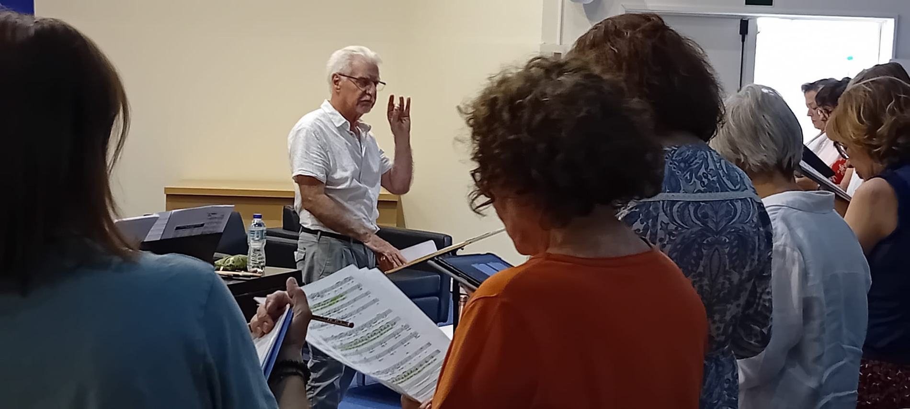
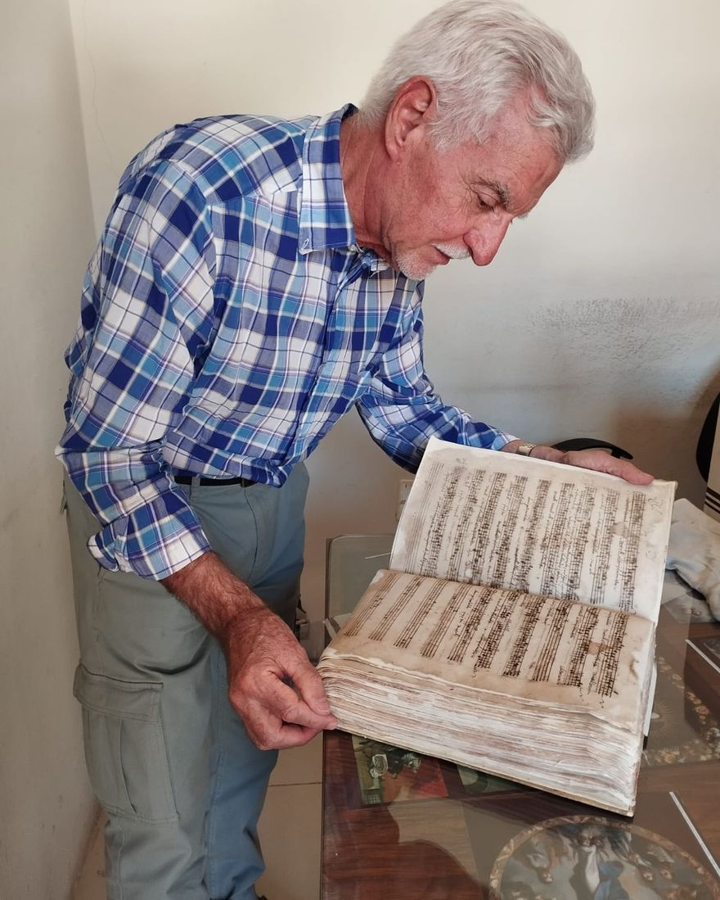
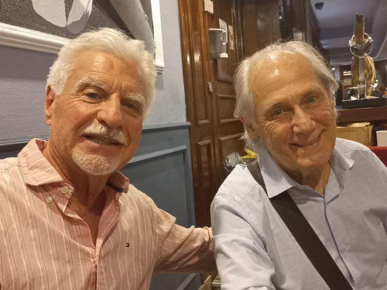
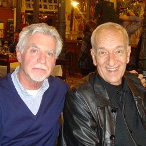
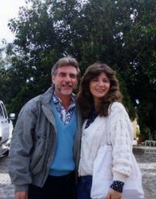
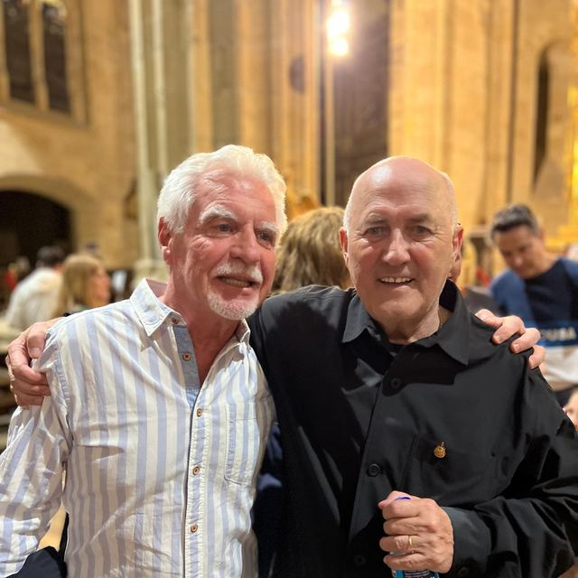
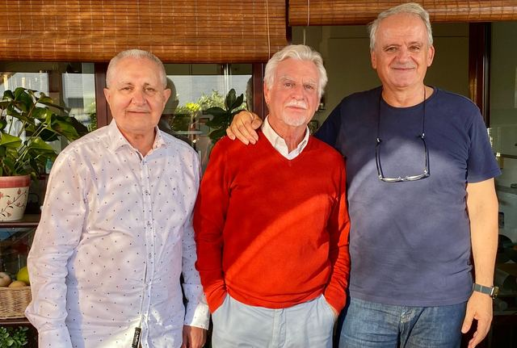
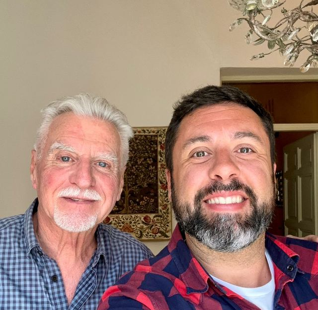
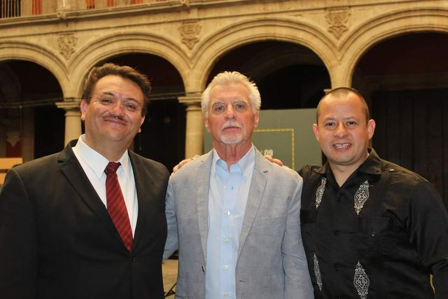

321 obras corales de Dante Andreo sobre poesía de García Lorca, Alberti y Pedro García Cabrera. Elegís la partitura, decís cuántas copias necesita tu coro y llega a tu correo.
Del catálogo
Cómo funciona
No hace falta crear cuenta ni registrarse. El PDF llega al correo apenas se confirma el pago.
Filtrás por plantilla, idioma, duración o dificultad, y ves la primera página de la partitura antes de decidir.
Una por cada cantor de tu coro. El precio por copia baja según la cantidad que lleves.
Con PayPal, en el momento. El PDF entra a tu correo listo para imprimir.
No comprás un archivo, comprás copias autorizadas. Cada copia habilita a un cantor. Si tu coro es de 24 personas, comprás 24 copias y podés imprimirlas.

Por plantilla, idioma, duración y dificultad. Con la primera página a la vista.
Obra completa · 1982—2022
321 obras para coro. Hacé clic en cualquiera para ver la primera página, los datos y comprarla.
Compositor y director de coro
Cuarenta años escribiendo para coro entre dos orillas: nació en Argentina, vive en España desde 1981, y su música se canta en más de treinta países.
Editado por
Premios
La línea de tiempo
Con quiénes trabajó
Cada obra del catálogo se estrenó en algún lado, con alguien al frente. Estos son los grupos y los directores que la cantaron primero.

Música antigua
Dante se formó en la interpretación de la música antigua española y colonial iberoamericana: manuscritos de archivo, cantorales, obras que llevaban siglos sin sonar.
Con el Grupo Vocal Gregor llevó ese repertorio a conciertos y grabaciones en más de treinta países de Europa y América.
El ambiente coral







Escribime
Respondo yo. Si compraste una obra y no te llegó, mandame el número de pedido de PayPal y te la reenvío el mismo día.
contacto@danteandreo.com